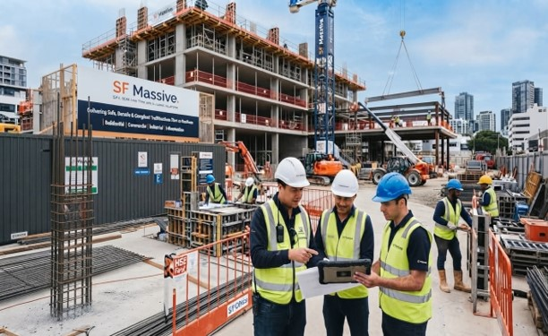
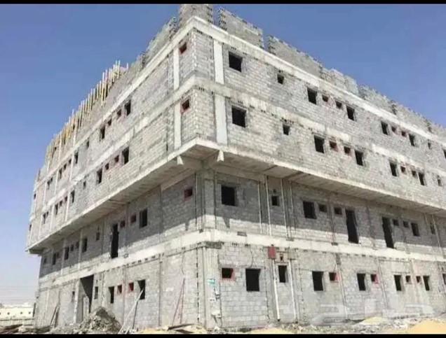
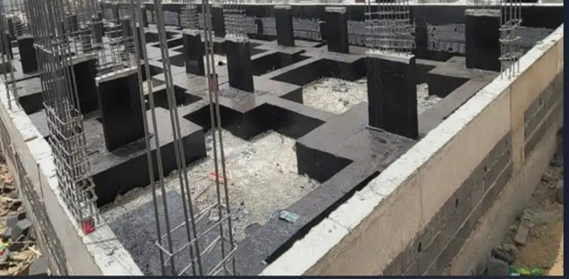
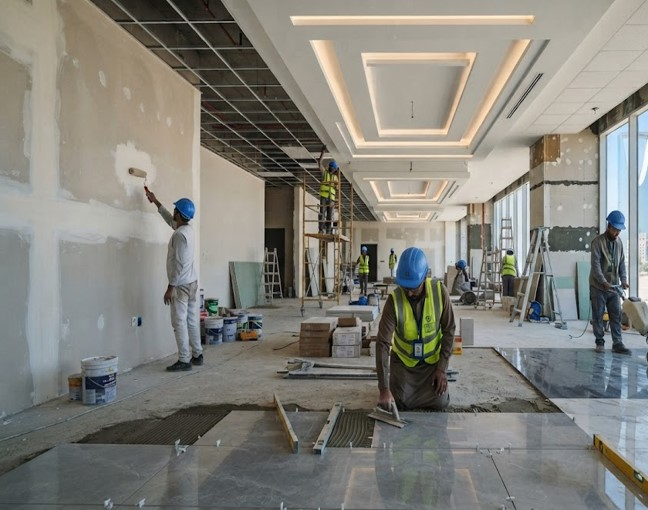
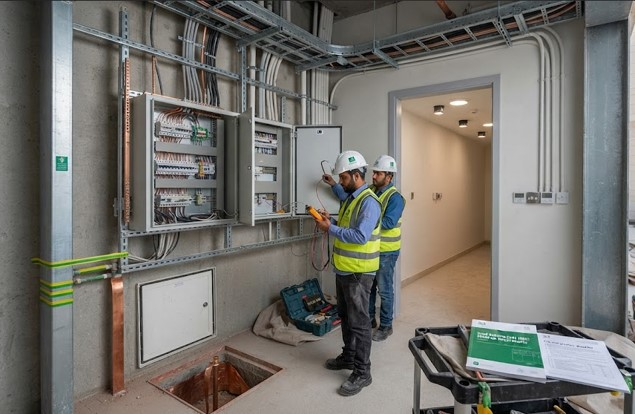

ما قبل التنفيذ وتجهيز الموقع
معاينة الموقع، وتخطيط التجهيز، وتنسيق التوقيع المساحي، والتنظيف، والحفر، والتسوية، وحفر الخنادق، والردم، والدك.
الرئيسية / خدماتنا / 01
دعم إنشائي عملي من تجهيز الموقع والأساسات إلى أعمال المباني والأعمال الخارجية.
ناقش الأعمال المدنيةالإنشاءات المدنية
تنفّذ إس إف ماسيف أعمال الإنشاءات المدنية والمباني للمشاريع السكنية والتجارية والصناعية ومشاريع البنية التحتية. وتشمل خدمات هذا القسم أعمال التمديدات الكهربائية بالتنسيق مع المخططات والمتطلبات المعتمدة للمشروع.
ملف الخدمة
صور مختارة من هذا القسم.





الصور من ملف الشركة، ولم يتم التحقق من نسبتها إلى مشاريع محددة.
نطاق الأعمال
يتم تأكيد النطاق النهائي وتسلسل الأعمال والمواد ونقاط التداخل حسب مخططات كل مشروع ومواصفاته وظروف موقعه.
معاينة الموقع، وتخطيط التجهيز، وتنسيق التوقيع المساحي، والتنظيف، والحفر، والتسوية، وحفر الخنادق، والردم، والدك.
أعمال الأساسات والشدات وحديد التسليح وصب الخرسانة والعناصر الإنشائية والقواعد والبلاطات الثقيلة.
إنشاء المباني، وأعمال البلوك، وأعمال العظم، والعزل المائي، وأعمال الحماية، والتشطيبات المعمارية.
تنسيق التمديدات الكهربائية مثل المواسير والكابلات ولوحات التوزيع والإنارة والتأريض والربط ودعم الفحص، حسب نطاق المشروع المتفق عليه.
تطوير الموقع، والرصف، والتصريف، وخنادق الخدمات، وغرف التفتيش، وأعمال الأسوار، وما يرتبط بها من أعمال مدنية.
أعمال الإصلاح والتجديد والتعديل، مخطط لها حسب إمكانية الوصول والوضع القائم وضوابط المشروع.
أسلوب عملنا
ننسّق التخطيط والتنفيذ مع العميل والاستشاري والمقاولين الآخرين حسب متطلبات العمل.